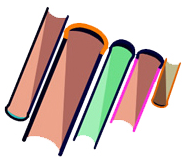

小佐军工数字图书馆为您进行科技信息挖掘、分析和科技创新力评估。只需输入关键词。即可轻松搜索到所摇要的研究状况、学科领域专家与研究机构、科研项目课题成果与进展、科研机构科研能力统计与分析，并获得相关分析报告，为科技创新决策提供支持与服务。
美国政府四大报告
（国防部AD报告、能源部DE报告、商务部PB报告、航空航天局NASA报告），文献总数达169.7万条。相比传统的外文报告获取，小佐在全国首家推出一键原文传递服务，动动手指就能获取想要的报告。
军工资讯
军工行业资讯、中国军事新闻、国际军事新闻、外国智库、军工集团、军事图片等一网打尽。2000多篇国内外资讯，持续更新！

军工词典
军工词典100+万词条为您提供翻译、查询。
军工图书
科技图书7400多册。期刊论文6500+万会议论文247+万